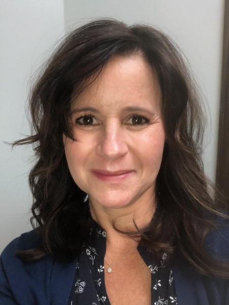

About Me

I am a Professional Educational Therapist (ET/P) in private practice with 30 years of experience supporting students with learning differences in the greater Pasadena area. Before establishing my private practice, my background included classroom teaching in the public schools and clinical work at the Frostig Center in Pasadena. I work with a diverse range of students, including those in local public and private schools as well as homeschoolers.
On a personal note, I have lived in Southern California for 32 years with my husband and our two college-aged children. In my spare time, I enjoy hiking, yoga, reading, cooking, and spending time with my family and our pets.
Professional Credentials
I hold California teaching credentials in both general and special education (mild-moderate), as well as a Master of Arts in Special Education with an emphasis in learning disabilities. Additionally, I earned a post-graduate certificate in Educational Therapy. As a professional member of the Association of Educational Therapists (AET), I previously served on the Board of Directors and co-founded the AET San Gabriel Valley Professional Study Group in 2004. I remain committed to continuing education and believe that learning is a lifelong journey.